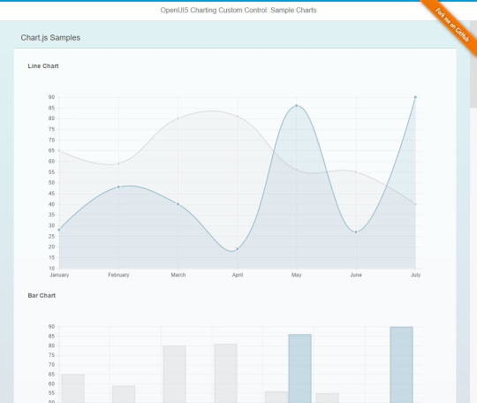

Inspired by
The Developer
Bring Digital Home
VideoDevelopers - Bringing Digital Home
TECHED 2015 SAP Executive Keynote (English)The time has come...
... to do something different on

Credits
Informations about included javascript libraries and components.
Navigate DownReveal
The current presentation is based on reveal.js, a framework for easily creating beautiful presentations using HTML by Hakim El Hattab.
reveal.js“Original version by Mark Schmale. Modified h3 to control embed/external linking and always open GitHub externally (X-Frame-Option).”
Starfield
The starfield is originally based on the Warp Starfield - JavaScript (JS1K) and HTML5 Canvas demo by Kevin Roast.
Warp Starfield“I rewrote some parts, added deviceorientation change event and rewrote the code to be used as an UI5 control with no dependencies.”
SVG Chart
Chart is based on a custom chart control by Alexander Graebe using c3js.
OpenUI5 Custom Controls for charting“Added resizing and data binding to dynamically reflect changes on model properties.”
C3.js Chart Library
D3-based reusable chart library.
C3.jsSignature
Plugin which simplifies creation of a signature capture field in the browser window, allowing a user to draw a signature using mouse, pen, or finger.
jSignature.js“Added an UI5 control wrapper. Currently some issues with resize handling!”
Radial Micro Chart
Micro chart displaying a ring chart highlighting a current status by SAP.
sap.suite.ui.microchart.RadialMicroChart“Modified version/rewritten version of SAPUI5 control to reflect mars widget design.”
Add To Homescreen
Automatically shows an overlaying message encouraging to add the web app to the homescreen by cubiq.
AddToHomescreen.js“Implemented load on demand in preboot.”
Audio Player
Based on wavesurfer.js, a customizable audio waveform visualization, built on top of Web Audio API and HTML5 Canvas.
wavesurfer.js“Added an UI5 control wrapper.”
Audio Spectrum Visualizer
Webaudiox is a bunch of helpers for WebAudio API by Jerome Etienne.
webaudiox.js“Using the lib to load and play mp3 audio file and connect to lineout to analyze and draw spectrum bar.”
daXX - Stardust Memories (Amiga Remix)
Amiga MOD arranged by daXX of daXX, original composed by Volker Tripp (Jester) of Sanity, release date 29/11/2015.
Amiga Music Jester Stardust Memories“Remembering the good old times, coding in assembler just for fun!”
References
Start Mission!
end of briefing...